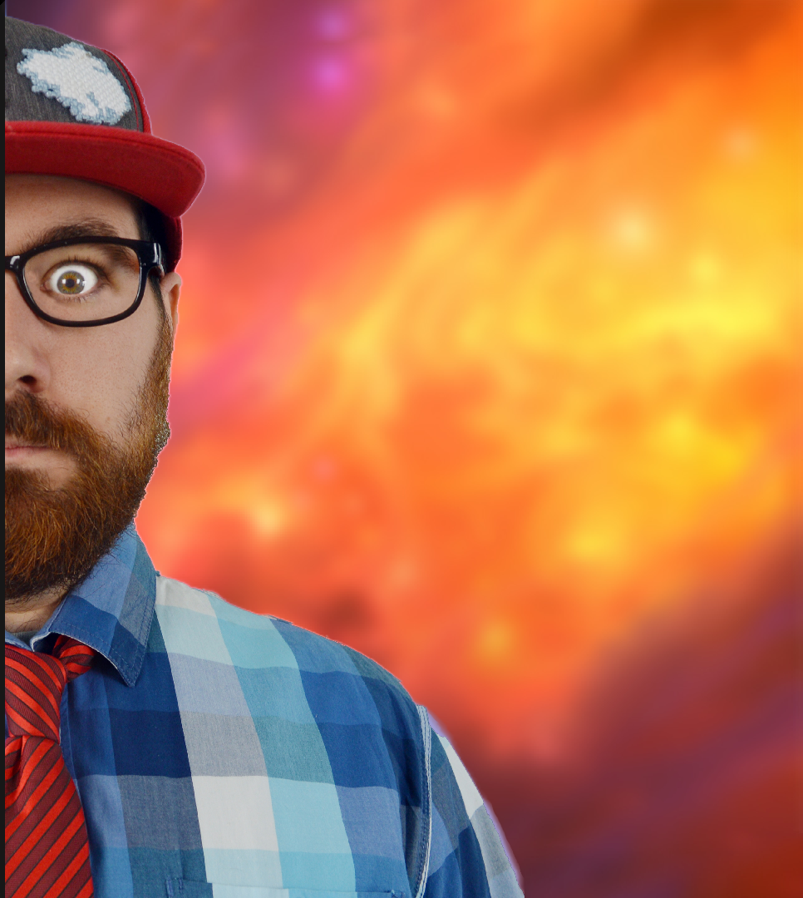

JIO

Sur twitch, vous retrouvez principalement des streams diverses tournant autour de la vidéo en général (série, cinéma, documentaire ect)
pour parler technique, scénario, acting ou encore doublage le tout toujours avec humour et bonne humeur de 21 h 00 à 00 h 00.
Pour commencer le vendredi, c'est soirée documentaire sur des sujets vastes allant de la mythologie aux phénomènes de société.
Le Samedi vous pourrez retrouver la trilogie du samedi avec en ce moment l'intégrale de "Au-delà du réel l'aventure continue" datant des années 90
au rythme de trois épisodes par streams.
Enfin le dimanche avec les "DIMANCHE NANAR" ou le concept est simple ont visionnent un nanar ou un mauvais film divertissant
on en rit puis on débrief et une fois le film visionné il pourra faire l'objet d'une chronique sur youtube.
A ça, vous pouvez ajouter des streams lancé a l'improviste tout au long de la semaine sur du jeu vidéo, du dessin ou tout ce qui pourrait me passer par la tête.
Actuellement sur youtube je ne suis plus actif mais vous pouvez y retrouver mon ancienne émission le Crazy Ponda Show
ou je m'amuser a analysé des vidéo absurde du web le tout avec de la mise en
scéne, des sketch et beaucoup d'humour
Les projets a venir: Je prépare actuellement une émission autour du cinéma de genre en particulier les nanar et les mockbuster
et ça dans le même esprit que mon ancienne émission c'est a dire de l'humour , de la mise en scéne et surtout des infos sur les film traité ou sur le cinéma en général